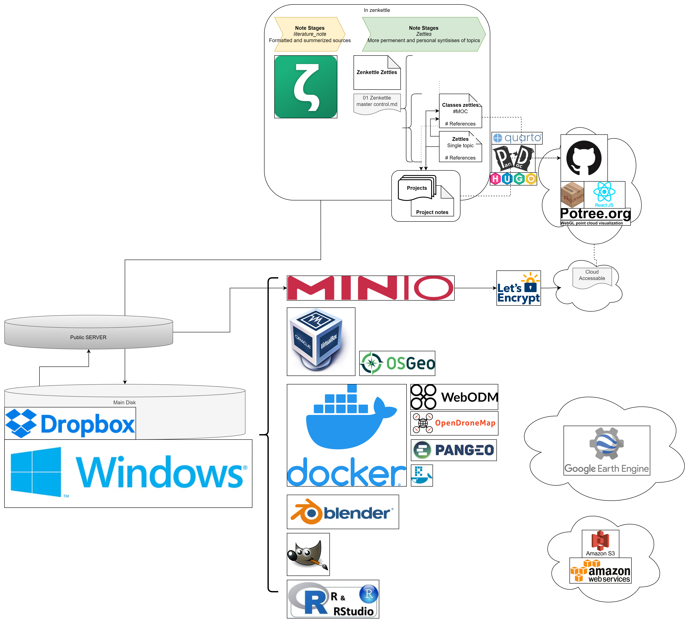
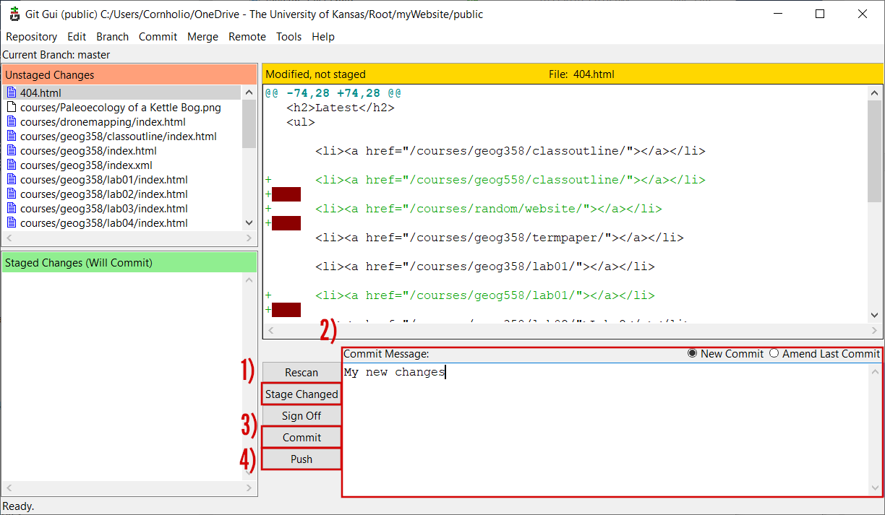

Installing Web
Digital communication
Like apparently everything digital these days, 2 years later and most of the material I’ve written here is too out of date to be used as a direct tutorial (like nailing a flying carpet down, the reproducibility crisis might really be a thing). The academic theme has now moved to a quasi-GUI driven deployment system which both makes the site easier to create and deploy, but also strips it of the flexibility that I loved from that older version. I also had a small crisis of content and form and so the bulk of the site (and most of my documentation) is now written in Quarto. That HUGO pattern is far cleaner and more flexible though, and I still reach for HUGO when the site doesn’t need to be data driven in the same way I was looking for with this documentation. So, I’ll keep this page up as some of these tips are still relevant, but as always make sure you defer to the official documentation when learning how to do this.
The creation of this website was spurred by a desire to streamline my digital footprint and more easily facilitate sharing. However, building a website of your own is not as straightforward or accessible as it otherwise could be. New efforts have vastly improved on this, to the point that if you just want a good looking web page that isn’t your GitHub profile, I recommend you start with Notion and see if that will work for you. It’s about as GUI driven a tool as I’ve ever used to set up a a page with the click and move objects, and then publish it to the world by making it public. After that you can use tinyurl to minify your URL to something more memorable like your name. If you find you need to share large data, OneDrive/Dropbox both serve for 90% of the use cases I can come up with, and Amazon is likely cheaper for the other 10%. But my name is Jim and I do things the hard way, the end result of which we all bear witness to here in the in the form of the Dropbox hosted markdown/Quarto/HUGO/GitHub pages/pkgdown/MinIO spiderweb monstrosity diagrammed here.

Setting up a HUGO - Github pages site
HUGO, a variation of the GO programming language, is touted as “The world’s fastest framework for building websites”. The HUGO documentation, particularly the hosting on github page, is a great place to start and is the “correct” way to go about creating a site. Below I will walk through how I managed to get it to work, your mileage may vary. Note that your site doesn’t have to look like mine, feel free to pick any off the themes page. The theme you choose will do most of the heavy lifting, and hopefully you find one that does everything you want it to. If not, be prepared to spend a few days figuring out how HUGO and the themes work; there is no shortcut to creating new site behavior and I found it to be a bit unforgiving at times.
In short, unless you REALLY want to sink time into this skillset, if your goal is to…
Have a web presence:
I have a lot of thoughts about social media, most of them not great. However, having some sort of web presence is pretty critical to networking these days. If the mess of twitter/linkedin/farmers only/instagram platforms don’t do it for you and you just want to point someone to a website, I would look over the following list and stop at the first one that meets you needs.
- A GitHub profile (the simple README.md) is killer and about as close to the source as anyone who actually knows what they’re looking at will want to go. Fancy that up with your work and an abbreviated resume and that’s all you’ll need to stand out. See https://github.com/mikejohnson51 as an example.
- only a tiny bit harder, use notion, publish it, and fancy up the url with tinyurl.
- Make a Powerpoint or Google slide deck and publish it to wix: https://www.youtube.com/watch?v=wzzxmp5HM68.
- Pick a 1 page hugo theme and stick with the templates and defaults.
- vibe code/google it: it’s insert year here, I am willing to bet current hot AI chatbot can write you one at this point.
- Do things the hard way (< I am here)
Create a github account:
Create a Github account. I suppose in an ideal world your website name would be the same as your GitHub username, but these can mismatch.
(if on windows) Install git for windows:
Follow the download and installation instructions at https://gitforwindows.org/.
Create the website url repository:
It is possible to buy a domain to customize your url, but in my case I’m cheap, and jimcoll.github.io is perfectly fine with me. Note that here I deviate from the HUGO docs. I don’t use GitHub the right way, and I don’t really have a reason to use a separate GitHub repository to keep the site files, instead opting to keep them on my local hard drive. Maybe that will change once I get better, but there is literally nothing in the world that has the ability to anger me faster than git, unless it’s Matlab syntax.
Create a website folder:
Next we need to create a folder where our website will live. This folder ideally shouldn’t be moved after you’ve created it, so place it somewhere useful (read: not the desktop). I gave into our digital overlords and moved most of my footprint to the cloud ( OneDrive Dropbox ), so on my root folder I created a folder called myWebsite. Then right click on the folder and select the “Always keep it on this device”.
Installing HUGO:
Next you need to install HUGO in the website directory. Download the appropriate windows install from the HUGO releases. Unzip the file and place the hugo.exe file in your myWebsite folder.
Create and update the website:
When you want to “manage your content”, it’s easiest to test it locally first. Shift-right click in the myWebsite folder and “Open PowerShell window here”. Then, type .\hugo.exe server --disableFastRender. You can then open a browser and go to http://localhost:1313/. At this point, when you make and save changes to your files, HUGO will rebuild your site automagically and changes appear instantly on the browser. It can also help to F12 -> disable cache if you are making more structural changes to the site and want to make sure the new CSS is loading correctly. When you are happy with the edits you’ve made, you next need to generate your site. Again, from the myWebsite folder, open up PowerShell and generate the files with the .\hugo.exe command. This repopulates the myWebsite folder. The last step is to push your new changes up to the repository, which you can do by right clicking on the public folder and selecting “Git GUI Here”, then…
- Stage Changed files
- create a commit message
- Commit the changes, and
- Push the changes up to the repository.

How this site was created:
Outdated section: this site is now Quarto, not relearn because I wanted a more direct transition between code and output, something I was not able to figure out how to accomplish with HUGO and raw markdown. I’ll keep this here though, since not everything needs to be data driven the same way I was looking for, the pathways and forms that HUGO deploy are still useful to learn, can be a bit more approachable, and some of the concepts transfer between the two pretty well. HUGO theming is also far richer than the doc-oriented styling of Quarto. See https://quarto.org/docs/websites/ for their howto guide on site creation.
This site is a smashup of the aafu and relearn themes. I fell in love with the AAFU theme and the accordion effect but the rest of the site was better suited to longform content styling, and I was too enthralled not to try meshing them. To do this, you need to understand a little about how HUGO creates a website. HUGO uses a tiered folder system to generate the site, and will look in folders following a defined lookup order. Therefore, we need to overwrite the academic home page theme with the aafu theme. To do this, I first install the Academic theme, and then replace the partials folder with the aafu theme. The last step is to reconfigure the config_default/ folder with the aafu theme markdown files. Most of these are straightforward, but within the config_default.toml, we need to set the theme order as follows.
How this site is populated:
It’s 2023 so I don’t need to tout the power of markdown, but that critical nuances of the language is the distinction between content and form. Because the goal of the website is to streamline and unify my digital footprint, all of these pages make up what I call “permanent notes” in my note taking app (Zettlr), and are spun into the different forms using PANDOC. The site is loaded into Zettlr as a workspace and I modify the markdown just like you would a normal site and how I modify the rest of my notes. I can even link directly to my zotero database, although the rendering on the site side is a little less meaningful to you, the outside reader, than it is to me. See how I use zotero for more details.
Make it your own
One of the best ways I’ve found to help improve my understanding of the software/deployment was to change some of the layouts. To add your resume to your image card as a link, and not as an icon as I have, you need to tweak the footer of the aafu theme, which should be in the themes.html. Mine now looks like so:
```{md}
<footer class="mb-4">
<a href="https://jimcoll.github.io/random/media/JamesCollSharedWebResume.docx">Download a "more traditional" resume
</a>
</br>
powered by <a href="https://gohugo.io/">hugo</a> & deployed on <a href="https://github.com/">github</a>
·
<i><a href="https://github.com/darshanbaral/aafu">aafu</a></i> by <a href="https://www.darshanbaral.com/">Darshan</a>
&
<i><a href="https://github.com/gcushen/hugo-academic">Academic</a></i> by <a href="https://georgecushen.com/">George</a>
</footer>
```Setting up S3
Everything after here is, lets say, a little questionable from a digital safety standpoint. While the 3 letter bois, and now the whole world, have chip level access to your hardware, there’s no reason to open up your entire network to the world moreso than it already is, which is what I think I’ve accomplished here. By attempting this you, you void all warranties and unlike ripping the tag off a mattress there can be some rather intrusive consequences to this.
S3 (Simple Storage Service) is a web protocol which serves data out, so an amazon S3 bucket is really just a computer which is hosting that data out to the world much like FTP. For the staunch but technically illiterate DIY crowd (just me), this is frustrating because FTP was doing just fine. Open Source stepped in and built the foundation and standards that comprise that format, and then Amazon has put proprietary wrappers around it. This means that the code that you would use to hit an open source asset is incompatible with AWS owned infrastructure, and AWS has made none of their bindings match these so I’ll inevitably end up writing 3 different versions to accomplish file manipulation. I’m sure all of this will change, and because I refuse to give up control over this aspect of my “supply chain”, I’ll show you how I turn an old laptop into my own cloud. Other handy resources:
- https://www.youtube.com/watch?v=zPmqbtKwtgw
Update: Just don’t do this. Give Jeff your credit card or just wait for WWIII.… Seriously, don’t follow these steps please.
NoIP
I have only a tenuous grasp of networking and the tubes setup (I remember learning about half duplex networks in high school, so that’s about my level if you know what I am talking about {{% icon glasses %}} ). In short, because our IP is dynamic we need some way to point a colloquial name (our website domain) to that rotating address and the free-est way I have found how to do this is no-ip. It seems as above board as the rest of this process has been, so set up an account (Type A).
NoIP note:
Feel free to skip the DUC app if you’d like. While the internet seems to think it’s safe and doesn’t do anything it says it doesn’t do, all it’s really doing is sending the port IP to the NO-IP servers at regular intervals. This is something you could accomplish with a little script, something like:
```{python}
# print("To Do: Probably never")
``````{r}
sink('outpath/myip.txt')
x <- system("ipconfig", intern=TRUE)
print(paste('--- Last run:',Sys.time(),'---'))
print('')
print(' ---- ')
print(x[grep("Temporary IPv6 Address", x)])
print(' ---- ')
print('')
print(x)
sink()
```And have that script run at intervals or as your network status changes.
Letsencrypt & certbot
If http were all we were after, we’d be all set but most S3 protocol (and it seems just the internet in general;) require https, and I believe JavaScript won’t execute on a page without coming from an https address (so things like custom version of Potree would be impossible to run externally). “All” I had to do was:
- Set your router to forward port 80 and 9000 to forward to your MinIO server
- Install certbot on the MinIO machine
- Following instructions from certbot, run the following command:
```{powershell}
cd C:\{certbot.exe}
.\certbot.exe certonly --standalone
```- Move those files into your minio folder (in my case that lives at C:<me>.minio)
- Rename private.pem > private.key and cert.pem > public.key, and put both files in the C:<me>.minio folder
- You should be good to go!
MinIO
Download minio
Starting the server
```{Powershell}
cd C:\{dir_to_minio.exe}
.\minio.exe server {path_to_host}
``````{Powershell}
cd C:
cd C:\Dropbox\root\database\
.\minio.exe server .\hosted
```Testing
Test url: https://waterduck.fakename.edu:
If all went well, congratulations! You can now challenge Jeffery to a dual of the cloud service titans, best of luck.
Extra Links
- https://discourse.gohugo.io/t/two-themes-as-separate-hugo-directories-deployed-to-the-same-website/27899/4
- https://conversiontools.io/convert/excel-to-html
- https://www.digitalocean.com/community/tutorials/how-to-set-up-minio-object-storage-server-in-standalone-mode-on-ubuntu-20-04#step-4-securing-access-to-minio-server-with-a-self-signed-certificate
- https://github.com/gcushen/hugo-academic/issues/84